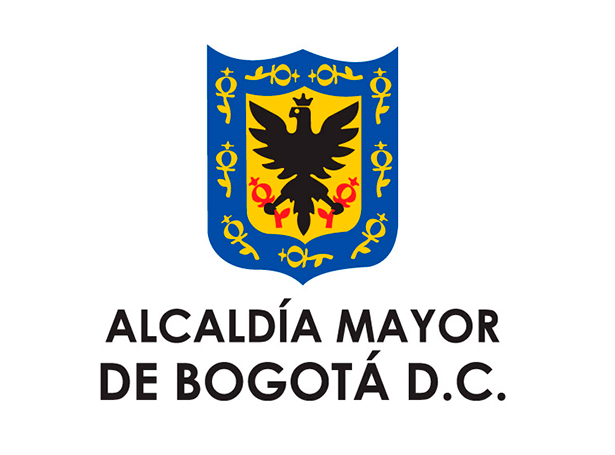
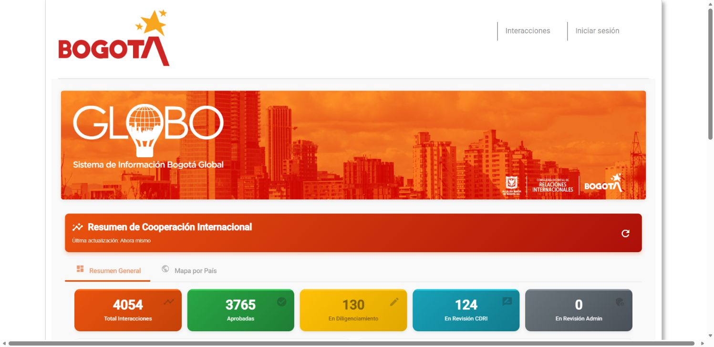

Professional contribution · ongoingNov 2026 — Present
GLOBO
Sistema de Información Bogotá Global
Supporting the information behind Bogotá’s international relationships.


The official platform may require sign-in for some views.
What GLOBO does
GLOBO brings information about Bogotá’s international activities into one institutional system. It supports analysis, visualization and reports that help the city follow its international relationships.
My ongoing contribution
At the Alcaldía, I support data analysis, information management and reporting for the Oficina Consejería Distrital de Relaciones Internacionales, helping track its activities and Bogotá’s international engagement.
A public overview
This page shares the public platform and a brief description of my role. Detailed work is not publicly shared.